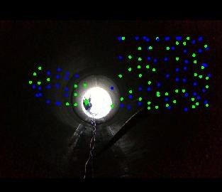
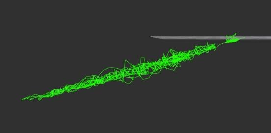

FAST-LIVO2-based Pipe Odometry



This project aims to implement a robust FAST-LIVO2-based pipe inspection SLAM pipeline, with a plan to draft a paper by the end of August 2026.


This project aims to implement a robust FAST-LIVO2-based pipe inspection SLAM pipeline, with a plan to draft a paper by the end of August 2026.